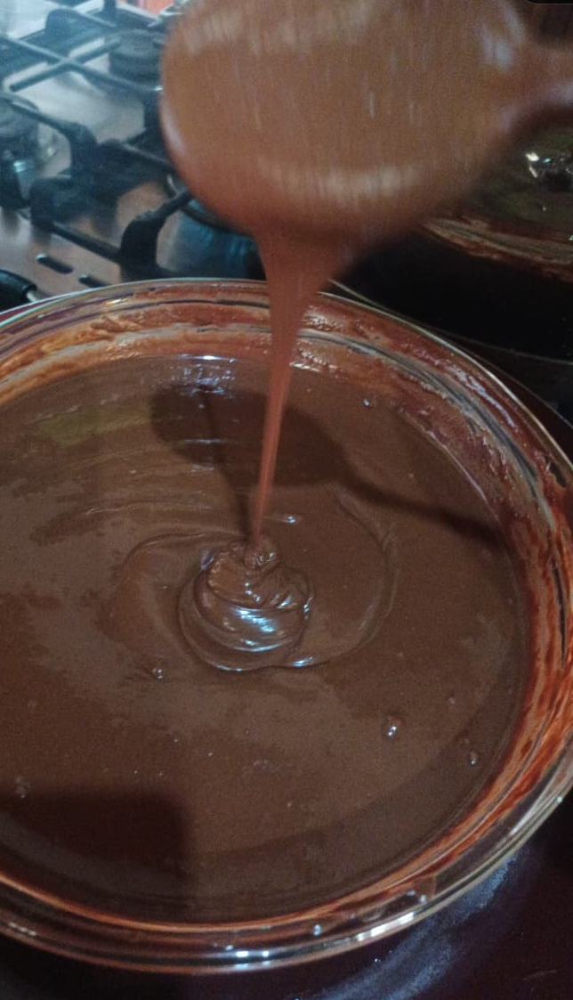
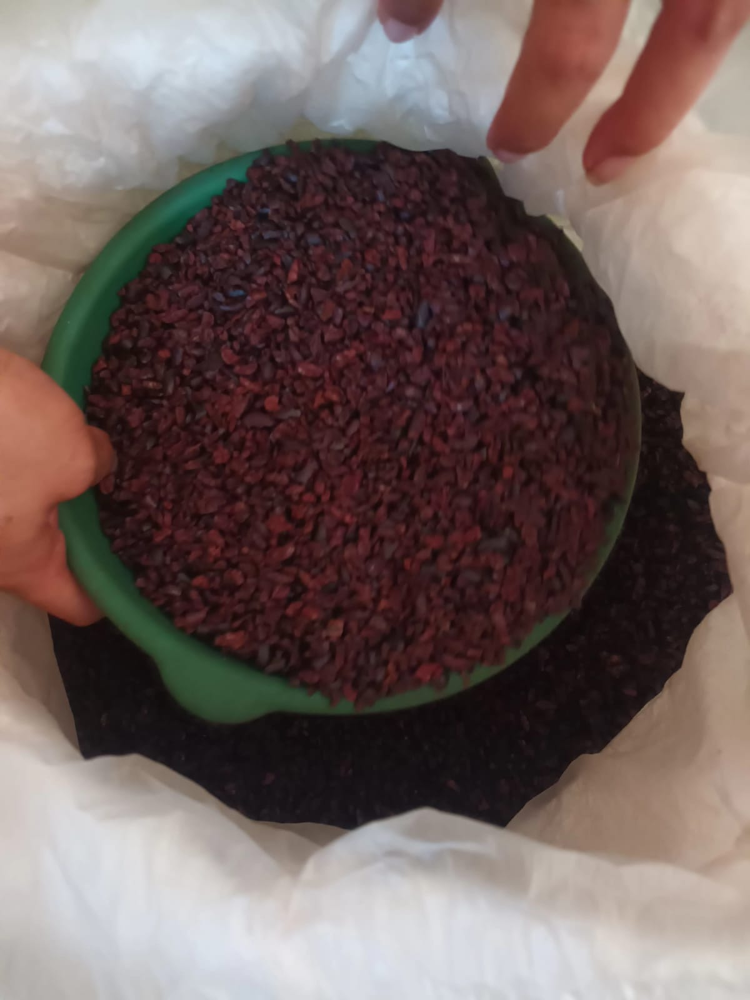
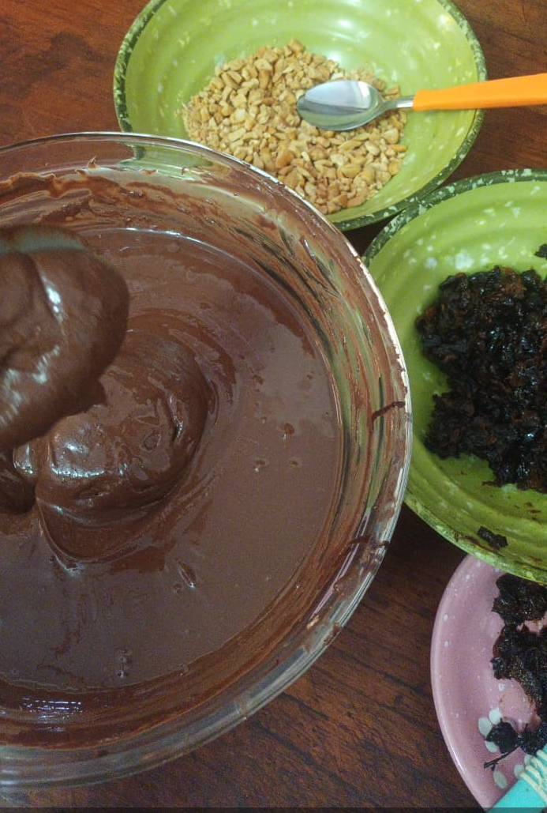
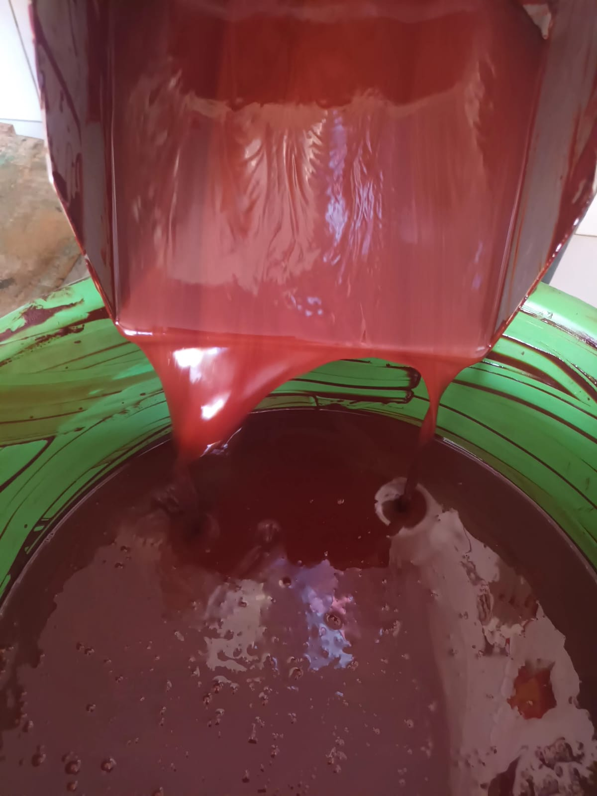
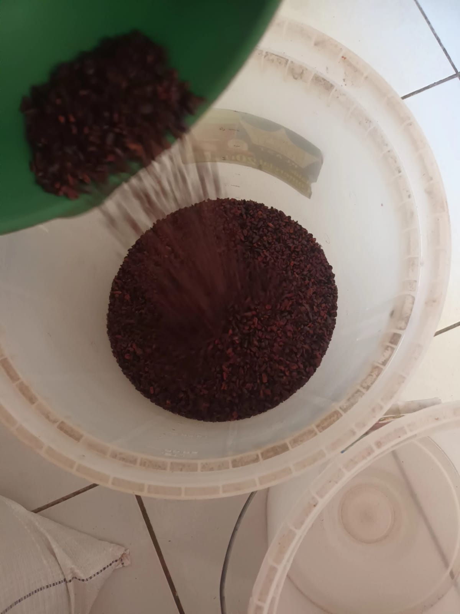

Número pendiente de incorporación.
Desde Baures, Beni · Bolivia
Chocolate que
nace del bosque.
La Morenita transforma el cacao silvestre amazónico en chocolate artesanal, honrando la tradición baureña y el trabajo de sus familias productoras.
Hecho localmenteCacao silvestreTradición artesanal

El sabor de nuestra Amazonía
De los bosques de Baures a una tradición que se comparte en cada sabor.
Conocer nuestra historia ↓

Nuestra historia
Una tradición que crece con nuestra tierra.
La Morenita es un emprendimiento chocolatero del municipio de Baures, Beni, impulsado por Mario Roca Terrazas. Su historia nace del aprovechamiento del cacao silvestre amazónico, un tesoro natural de la región.
El emprendimiento transforma este fruto en chocolate y promueve la tradición chocolatera baureña, el desarrollo productivo local y el reconocimiento de Baures como tierra del chocolate silvestre.
“Una historia de origen, oficio y sabor.”
Nuestro cacao
La riqueza comienza en el fruto.
El cacao silvestre de Baures es la materia prima que da vida a La Morenita. Desde la recolección cuidadosa hasta la preparación artesanal, cada etapa mantiene un vínculo directo con el bosque y el territorio.
Explorar el proceso →
Cacao silvestrede Baures
Proceso artesanal
Del bosque a la tableta.
Una secuencia de trabajo que revela el cuidado detrás de cada preparación. Las etapas posteriores al secado quedarán ampliadas con información técnica del emprendimiento.
- 01
Recolección
Se eligen los frutos maduros del cacao que crece en el bosque.
- 02
Extracción y selección
Las mazorcas se abren y sus semillas se separan con cuidado.
 03
03Fermentación
El cacao reposa y desarrolla sus aromas y carácter.
 04
04Secado
Los granos se preparan al sol para la siguiente etapa.
 05
05Tostado
Detalle técnico pendiente de validación por el emprendimiento.

06Procesamiento
Detalle técnico pendiente de validación por el emprendimiento.

07Moldeado
Detalle técnico pendiente de validación por el emprendimiento.

08Producto terminado
La presentación comercial se incorporará al confirmar sus datos.
Catálogo
El carácter de La Morenita.
Una propuesta artesanal ligada a su origen. Los detalles comerciales serán actualizados directamente por el emprendimiento.
Disponible para consulta
Chocolate artesanal
La Morenita
Chocolate elaborado con cacao silvestre de Baures.
- Presentación
- Por confirmar
- Peso
- Por confirmar
- Ingredientes
- Por confirmar
- Precio
- Por confirmar
Galería multimedia
Momentos de nuestro hacer.
Imágenes y registros audiovisuales del cacao, su elaboración y las personas que dan vida a La Morenita.

Nuestros productores
El valor está en las manos que lo hacen posible.
La Morenita reconoce el esfuerzo de las familias productoras de Baures y el conocimiento artesanal que acompaña la transformación del cacao silvestre.
Los nombres, historias y créditos de las personas se incorporarán con su autorización.
Baures, nuestra tierra
Un chocolate con identidad amazónica.
La Morenita nace en Baures, Beni. Su propuesta celebra el cacao silvestre, la tradición chocolatera local y una oportunidad de desarrollo productivo para la región.
Conectar con La Morenita →Contacto y pedidos
¿Quieres conocer La Morenita?
Estamos preparando los canales de atención. Comparte los datos oficiales del emprendimiento para activar pedidos y consultas directas.
Correo electrónico
Dirección pendiente de incorporación.
Ubicación
Baures, Beni, Bolivia.
Redes sociales
Enlaces oficiales pendientes de incorporación.